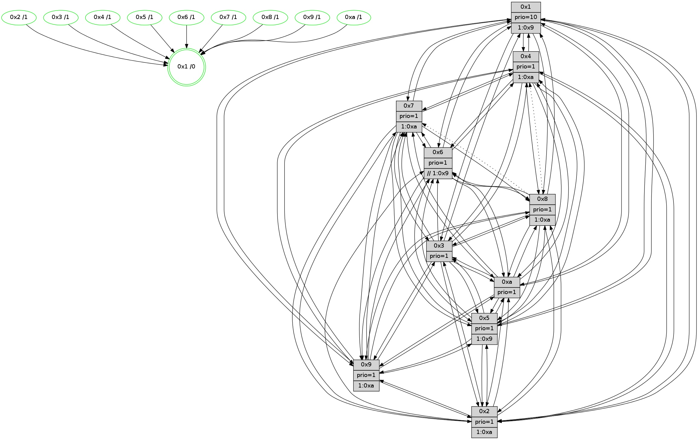

>> << IDX [start] -100 -25 -5 +0 +5 +25 +100 [1395.42040396]
 Previous packets
1390.006620 [Hello(9): seq=830 sym=2,5,3,4,7,6,8,10,1 sysInfo=hasWarning stat=2:8,11,14,11/5:4,12,2,8/3:9,13,8,4/4:0,9,4,2/7:0,1,9,4/6:8,2,14,14/8:13,14,4,6/10:5,5,0,0/1:15,15,5,1]
1390.009341 [Hello(4): seq=886 sym=5,6,2,3,9,7,10,1 sysInfo= stat=5:6,15,9,2/6:15,3,14,15/2:8,2,5,1/3:14,15,0,15/9:6,7,14,2/7:8,13,1,0/10:1,2,0,14/1:6,2,4,1]
1390.013642 [Hello(7): seq=886 sym=2,3,5,6,4,9,10,1 sysInfo=hasWarning stat=2:4,1,4,4/3:11,9,8,3/5:9,3,12,3/6:7,4,7,12/4:14,10,7,1/9:5,13,9,2/10:12,8,0,7/1:2,11,1,0]
1390.016191 [Color(5) seq=433 @0:0 prio=1 >1.@6,1.@7,1.@8,1.@9]
1390.018260 [Color(7) seq=414 @0:0 prio=1 >1.@8,1.@a]
1390.020459 [Color(4) seq=425 @0:0 prio=1 >1.@a]
1390.022678 [Hello(8): seq=830 sym=5,2,3,9,6,4,10,1 asym=7 sysInfo=hasWarning stat=5:7,3,8,1/2:15,11,12,12/3:8,13,2,4/9:14,5,9,5/6:12,11,15,0/4:5,10,3,1/10:7,15,14,5/1:11,8,5,0/7:11,12,3,1]
1390.025902 [Color(8) seq=485 @0:0 prio=1 >1.@a]
1390.030089 [Hello(10): seq=819 sym=6,2,3,8,7,5,9,4,1 sysInfo=hasWarning stat=6:7,6,2,4/2:7,13,3,0/3:13,15,8,15/8:8,10,1,3/7:14,2,15,9/5:15,1,14,1/9:1,4,3,1/4:3,12,11,2/1:12,13,0,1]
----------------------------------------------------------------------
1390.691617 beacon01(faad) #0 coord=01,02,03,04,05,06,07,0a,09,08 cycle=688.0ms assoc
-- color-indic=1 64 c2 4c
1390.701600 beacon02(faad) #0 coord=01,02,03,04,05,06,07,0a,09,08 cycle=688.0ms assoc 64 51 7d
1390.711598 beacon03(faad) #0 coord=01,02,03,04,05,06,07,0a,09,08 cycle=688.0ms assoc 64 2b 30
1390.721600 beacon04(faad) #0 coord=01,02,03,04,05,06,07,0a,09,08 cycle=688.0ms assoc 64 5c da
1390.731600 beacon05(faad) #0 coord=01,02,03,04,05,06,07,0a,09,08 cycle=688.0ms assoc 64 26 97
1390.741600 beacon06(faad) #0 coord=01,02,03,04,05,06,07,0a,09,08 cycle=688.0ms assoc 64 a8 40
1390.751604 beacon07(faad) #0 coord=01,02,03,04,05,06,07,0a,09,08 cycle=688.0ms assoc 64 d2 0d
1390.761605 beacon0a(faad) #0 coord=01,02,03,04,05,06,07,0a,09,08 cycle=688.0ms assoc 64 a3 06
1390.781607 beacon08(faad) #0 coord=01,02,03,04,05,06,07,0a,09,08 cycle=688.0ms assoc 64 57 9c
1390.794455 [Hello(1): seq=796 sym=4,2,9,5,10,3,8,6,7 sysInfo=coloring-mode-on,ColoringModeRequestCalled stat=4:0,14,9,3/2:2,4,0,5/9:1,11,4,2/5:5,11,6,9/10:1,11,4,8/3:3,15,4,11/8:0,5,3,3/6:6,11,3,1/7:15,9,10,1]
1390.797492 [Hello(2): seq=883 sym=4,5,7,6,9,8,10,1 sysInfo=hasWarning stat=4:5,14,6,13/5:5,9,15,3/7:3,12,8,1/6:9,14,6,1/9:10,8,7,10/8:8,11,3,12/10:4,0,5,11/1:5,14,15,0]
1390.799968 [Hello(5): seq=887 sym=7,6,4,3,1,9,8,10,2 sysInfo=hasWarning stat=7:13,5,14,0/6:13,3,11,4/4:2,12,4,15/3:3,12,7,2/1:8,2,8,0/9:1,10,15,11/8:14,3,1,4/10:0,9,1,9/2:3,12,7,7]
1390.802422 [Hello(3): seq=887 sym=1,7,6,2,4,8,9,10,5 sysInfo=hasWarning stat=1:9,5,8,0/7:8,11,10,14/6:10,1,4,1/2:1,11,15,2/4:1,5,12,13/8:0,10,4,5/9:15,6,10,1/10:1,14,14,5/5:13,0,12,1]
1390.806196 [Color(3) seq=516 @0:0 prio=1]
1390.809091 [Color(10) seq=476 @0:0 prio=1]
1390.810412 [Hello(6): seq=887 sym=2,5,4,7,9,8,10,1 sysInfo=hasWarning stat=2:4,10,2,0/5:4,5,5,4/4:13,14,9,8/7:0,13,4,15/9:6,7,14,11/8:9,3,13,6/10:11,11,6,13/1:0,14,5,1]
1390.813415 [Color(6) seq=519 @0:0 prio=1 >>1.@7,1.@8,1.@9]
1390.819946 [Color(2) seq=463 @0:0 prio=1 >1.@a]
1390.823088 [Color(9) seq=446 @0:0 prio=1 >1.@a]
----------------------------------------------------------------------
1391.479747 beacon01(faad) #0 coord=01,02,03,04,05,06,07,0a,09,08 cycle=688.0ms assoc
-- color-indic=1 64 7e 49
1391.489730 beacon02(faad) #0 coord=01,02,03,04,05,06,07,0a,09,08 cycle=688.0ms assoc 64 ed 78
1391.499730 beacon03(faad) #0 coord=01,02,03,04,05,06,07,0a,09,08 cycle=688.0ms assoc 64 97 35
1391.509731 beacon04(faad) #0 coord=01,02,03,04,05,06,07,0a,09,08 cycle=688.0ms assoc 64 e0 df
1391.519731 beacon05(faad) #0 coord=01,02,03,04,05,06,07,0a,09,08 cycle=688.0ms assoc 64 9a 92
1391.529732 beacon06(faad) #0 coord=01,02,03,04,05,06,07,0a,09,08 cycle=688.0ms assoc 64 14 45
1391.539730 beacon07(faad) #0 coord=01,02,03,04,05,06,07,0a,09,08 cycle=688.0ms assoc 64 6e 08
1391.549736 beacon0a(faad) #0 coord=01,02,03,04,05,06,07,0a,09,08 cycle=688.0ms assoc 64 1f 03
1391.569737 beacon08(faad) #0 coord=01,02,03,04,05,06,07,0a,09,08 cycle=688.0ms assoc 64 eb 99
1391.581252 [Hello(9): seq=831 sym=2,5,3,4,7,6,8,10,1 sysInfo=hasWarning stat=2:8,11,14,11/5:4,13,2,8/3:9,13,8,4/4:1,10,4,2/7:0,2,9,4/6:8,2,14,14/8:14,15,4,6/10:6,5,0,0/1:0,0,5,1]
1391.584942 [Hello(10): seq=820 sym=6,2,3,8,7,5,9,4,1 sysInfo=hasWarning stat=6:8,7,2,4/2:7,14,3,0/3:13,15,8,15/8:8,10,1,3/7:14,2,15,9/5:15,1,14,1/9:1,5,3,1/4:3,12,11,2/1:13,13,0,1]
1391.587379 [Hello(4): seq=887 sym=5,8,6,2,3,9,7,10,1 sysInfo= stat=5:7,15,9,2/8:0,1,0,0/6:0,4,14,15/2:9,3,5,1/3:15,0,0,15/9:7,8,14,2/7:8,13,1,0/10:2,3,0,14/1:7,2,4,1]
1391.590119 [Hello(7): seq=887 sym=2,3,5,6,4,8,9,10,1 sysInfo=hasWarning stat=2:5,2,4,4/3:12,10,8,3/5:10,3,12,3/6:8,5,7,12/4:14,11,7,1/8:0,1,0,0/9:6,14,9,2/10:13,9,0,7/1:3,11,1,0]
1391.594110 [Color(5) seq=434 @0:0 prio=1 >1.@7,1.@8,1.@9,1.@a]
1391.596071 [Hello(8): seq=831 sym=5,2,3,9,6,4,10,1 asym=7 sysInfo=hasWarning stat=5:8,3,8,1/2:0,12,12,12/3:9,14,2,4/9:15,6,9,5/6:13,12,15,0/4:5,10,3,1/10:8,0,14,5/1:12,8,5,0/7:11,12,3,1]
1391.599897 [Color(8) seq=486 @0:0 prio=1 >1.@a]
1391.601286 [Color(1) seq=567 @0:0 prio=10 >1.@9,1.@a]
1391.603604 [Color(4) seq=426 @0:0 prio=1 >1.@a]
1391.605046 [Color(7) seq=415 @0:0 prio=1 >1.@8,1.@a]
----------------------------------------------------------------------
1392.267878 beacon01(faad) #0 coord=01,02,03,04,05,06,07,0a,09,08 cycle=688.0ms assoc
-- color-indic=1 64 aa 7c
1392.277861 beacon02(faad) #0 coord=01,02,03,04,05,06,07,0a,09,08 cycle=688.0ms assoc 64 39 4d
1392.287860 beacon03(faad) #0 coord=01,02,03,04,05,06,07,0a,09,08 cycle=688.0ms assoc 64 43 00
1392.297860 beacon04(faad) #0 coord=01,02,03,04,05,06,07,0a,09,08 cycle=688.0ms assoc 64 34 ea
1392.307862 beacon05(faad) #0 coord=01,02,03,04,05,06,07,0a,09,08 cycle=688.0ms assoc 64 4e a7
1392.317861 beacon06(faad) #0 coord=01,02,03,04,05,06,07,0a,09,08 cycle=688.0ms assoc 64 c0 70
1392.327862 beacon07(faad) #0 coord=01,02,03,04,05,06,07,0a,09,08 cycle=688.0ms assoc 64 ba 3d
1392.337866 beacon0a(faad) #0 coord=01,02,03,04,05,06,07,0a,09,08 cycle=688.0ms assoc 64 cb 36
1392.357867 beacon08(faad) #0 coord=01,02,03,04,05,06,07,0a,09,08 cycle=688.0ms assoc 64 3f ac
1392.370680 [Hello(5): seq=888 sym=7,6,4,3,1,9,8,10,2 sysInfo=hasWarning stat=7:13,6,14,0/6:14,4,11,4/4:2,13,4,15/3:4,13,7,2/1:8,3,8,0/9:2,11,15,11/8:15,4,1,4/10:0,10,1,9/2:3,13,7,7]
1392.373717 [Color(10) seq=477 @0:0 prio=1]
1392.376414 [Color(9) seq=447 @0:0 prio=1 >1.@a]
1392.378022 [Color(2) seq=464 @0:0 prio=1 >1.@a]
1392.380485 [STC(1) #0.238 tree-change,inconsistent-stability,stable,to-color d=0]
1392.386147 [Hello(3): seq=888 sym=1,7,6,2,4,8,9,10,5 sysInfo=hasWarning stat=1:10,6,8,0/7:9,12,10,14/6:11,2,4,1/2:1,12,15,2/4:1,6,12,13/8:1,11,4,5/9:0,7,10,1/10:2,15,14,5/5:13,1,12,1]
1392.390899 [Color(3) seq=517 @0:0 prio=1]
1392.393639 [Hello(6): seq=888 sym=5,4,7,9,8,10,1 sysInfo=hasWarning stat=5:4,6,5,4/4:13,15,9,8/7:1,14,4,15/9:7,8,14,11/8:10,4,13,6/10:12,11,6,13/1:1,15,5,1]
1392.398450 [Color(6) seq=520 @0:0 prio=1 >>1.@8,1.@9,1.@a]
----------------------------------------------------------------------
1393.056009 beacon01(faad) #0 coord=01,02,03,04,05,06,07,0a,09,08 cycle=688.0ms assoc
-- color-indic=1 64 16 79
1393.065992 beacon02(faad) #0 coord=01,02,03,04,05,06,07,0a,09,08 cycle=688.0ms assoc 64 85 48
1393.075992 beacon03(faad) #0 coord=01,02,03,04,05,06,07,0a,09,08 cycle=688.0ms assoc 64 ff 05
1393.085991 beacon04(faad) #0 coord=01,02,03,04,05,06,07,0a,09,08 cycle=688.0ms assoc 64 88 ef
1393.095993 beacon05(faad) #0 coord=01,02,03,04,05,06,07,0a,09,08 cycle=688.0ms assoc 64 f2 a2
1393.105992 beacon06(faad) #0 coord=01,02,03,04,05,06,07,0a,09,08 cycle=688.0ms assoc 64 7c 75
1393.115993 beacon07(faad) #0 coord=01,02,03,04,05,06,07,0a,09,08 cycle=688.0ms assoc 64 06 38
1393.125996 beacon0a(faad) #0 coord=01,02,03,04,05,06,07,0a,09,08 cycle=688.0ms assoc 64 77 33
1393.145998 beacon08(faad) #0 coord=01,02,03,04,05,06,07,0a,09,08 cycle=688.0ms assoc 64 83 a9
1393.156971 [STC(2)->1 #0.238 tree-change,inconsistent-stability,stable,to-color d=1]
1393.158749 [Hello(10): seq=821 sym=6,2,3,8,7,5,9,4,1 sysInfo=hasWarning stat=6:9,8,2,4/2:7,15,3,0/3:14,0,8,15/8:9,11,1,3/7:15,3,15,9/5:15,2,14,1/9:1,6,3,1/4:4,13,11,2/1:14,14,1,1]
1393.161430 [Hello(9): seq=832 sym=2,5,3,4,7,6,8,10,1 sysInfo=hasWarning stat=2:8,12,14,11/5:5,14,2,8/3:10,14,8,4/4:1,11,4,2/7:1,3,9,4/6:9,3,14,14/8:15,0,4,6/10:7,5,0,0/1:0,1,6,1]
1393.164087 [Hello(7): seq=888 sym=2,3,5,6,4,8,9,10,1 sysInfo=hasWarning stat=2:5,3,4,4/3:13,11,8,3/5:11,3,12,3/6:9,6,7,12/4:14,11,7,1/8:0,1,0,0/9:7,15,9,2/10:13,10,0,7/1:3,11,2,0]
1393.166855 [STC(5)->1 #0.238 tree-change,inconsistent-stability,stable,to-color d=1]
1393.168515 [STC(7)->1 #0.238 tree-change,inconsistent-stability,stable,to-color d=1]
1393.170104 [Color(5) seq=435 @0:0 prio=1 >1.@8,1.@9,1.@a]
1393.172041 [STC(10)->1 #0.238 tree-change,inconsistent-stability,stable,to-color d=1]
1393.176392 [Hello(8): seq=832 sym=5,2,3,9,6,10,1 asym=7,4 sysInfo=hasWarning stat=5:9,3,8,1/2:0,13,12,12/3:10,15,2,4/9:0,7,9,5/6:14,13,15,0/10:8,1,14,5/1:12,9,6,0/7:11,13,3,1/4:5,11,3,1]
1393.180236 [STC(8)->1 #0.238 tree-change,inconsistent-stability,stable,to-color d=1]
1393.181834 [Hello(4): seq=888 sym=5,8,6,2,3,9,7,10,1 sysInfo= stat=5:8,15,9,2/8:0,1,0,0/6:1,5,14,15/2:10,4,5,1/3:0,1,0,15/9:8,9,14,2/7:8,14,1,0/10:2,3,0,14/1:7,2,5,1]
1393.185306 [STC(4)->1 #0.238 tree-change,inconsistent-stability,stable,to-color d=1]
1393.187136 [Color(8) seq=487 @0:0 prio=1 >1.@a]
1393.188994 [Color(4) seq=427 @0:0 prio=1 >1.@a]
----------------------------------------------------------------------
1393.844141 beacon01(faad) #0 coord=01,02,03,04,05,06,07,0a,09,08 cycle=688.0ms assoc
-- color-indic=1 64 d2 77
1393.854124 beacon02(faad) #0 coord=01,02,03,04,05,06,07,0a,09,08 cycle=688.0ms assoc 64 41 46
1393.864125 beacon03(faad) #0 coord=01,02,03,04,05,06,07,0a,09,08 cycle=688.0ms assoc 64 3b 0b
1393.874124 beacon04(faad) #0 coord=01,02,03,04,05,06,07,0a,09,08 cycle=688.0ms assoc 64 4c e1
1393.884123 beacon05(faad) #0 coord=01,02,03,04,05,06,07,0a,09,08 cycle=688.0ms assoc 64 36 ac
1393.894124 beacon06(faad) #0 coord=01,02,03,04,05,06,07,0a,09,08 cycle=688.0ms assoc 64 b8 7b
1393.904124 beacon07(faad) #0 coord=01,02,03,04,05,06,07,0a,09,08 cycle=688.0ms assoc 64 c2 36
1393.914128 beacon0a(faad) #0 coord=01,02,03,04,05,06,07,0a,09,08 cycle=688.0ms assoc 64 b3 3d
1393.934132 beacon08(faad) #0 coord=01,02,03,04,05,06,07,0a,09,08 cycle=688.0ms assoc 64 47 a7
1393.945337 [Hello(5): seq=889 sym=7,6,4,3,1,9,8,10,2 sysInfo=hasWarning stat=7:13,6,14,0/6:15,5,11,4/4:3,14,5,15/3:5,14,7,2/1:8,3,9,0/9:2,12,15,11/8:0,5,2,4/10:1,10,2,9/2:4,14,8,7]
1393.949771 [Hello(2): seq=885 sym=4,5,7,6,3,9,8,10,1 sysInfo=hasWarning stat=4:6,0,7,13/5:5,11,0,3/7:5,13,9,1/6:10,15,6,1/3:0,1,0,0/9:12,9,7,10/8:10,13,4,12/10:6,0,5,11/1:7,15,0,0]
1393.952710 [Color(9) seq=448 @0:0 prio=1 >1.@a]
1393.954267 [Hello(1): seq=798 sym=4,2,9,5,10,3,8,6,7 sysInfo=coloring-mode-on,ColoringModeRequestCalled stat=4:1,0,10,3/2:3,5,1,5/9:2,12,4,2/5:6,12,7,9/10:2,12,5,8/3:5,1,4,11/8:1,6,4,3/6:8,13,3,1/7:0,10,11,1]
1393.956896 [Color(2) seq=465 @0:0 prio=1 >1.@a]
1393.960225 [Hello(3): seq=889 sym=1,7,6,2,4,8,9,10,5 sysInfo=hasWarning stat=1:11,7,8,0/7:10,12,11,14/6:12,3,4,1/2:1,12,0,2/4:2,7,13,13/8:2,12,5,5/9:0,7,10,1/10:3,15,15,5/5:13,2,13,1]
1393.963035 [Color(3) seq=518 @0:0 prio=1]
1393.967879 [Color(10) seq=478 @0:0 prio=1]
1393.969533 [Hello(6): seq=889 sym=5,4,7,9,8,10,1 sysInfo=hasWarning stat=5:4,7,6,4/4:14,0,10,8/7:2,15,5,15/9:7,8,14,11/8:11,5,14,6/10:13,11,6,13/1:1,0,5,1]
1393.974338 [Color(6) seq=521 @0:0 prio=1 >>1.@9,1.@a]
----------------------------------------------------------------------
1394.632271 beacon01(faad) #0 coord=01,02,03,04,05,06,07,0a,09,08 cycle=688.0ms assoc
-- color-indic=1 64 6e 72
1394.642254 beacon02(faad) #0 coord=01,02,03,04,05,06,07,0a,09,08 cycle=688.0ms assoc 64 fd 43
1394.652253 beacon03(faad) #0 coord=01,02,03,04,05,06,07,0a,09,08 cycle=688.0ms assoc 64 87 0e
1394.662255 beacon04(faad) #0 coord=01,02,03,04,05,06,07,0a,09,08 cycle=688.0ms assoc 64 f0 e4
1394.672256 beacon05(faad) #0 coord=01,02,03,04,05,06,07,0a,09,08 cycle=688.0ms assoc 64 8a a9
1394.682255 beacon06(faad) #0 coord=01,02,03,04,05,06,07,0a,09,08 cycle=688.0ms assoc 64 04 7e
1394.692255 beacon07(faad) #0 coord=01,02,03,04,05,06,07,0a,09,08 cycle=688.0ms assoc 64 7e 33
1394.702259 beacon0a(faad) #0 coord=01,02,03,04,05,06,07,0a,09,08 cycle=688.0ms assoc 64 0f 38
1394.722260 beacon08(faad) #0 coord=01,02,03,04,05,06,07,0a,09,08 cycle=688.0ms assoc 64 fb a2
1394.735386 [Hello(10): seq=822 sym=6,2,3,8,7,5,9,4,1 sysInfo=hasWarning stat=6:10,9,2,4/2:7,15,4,0/3:14,0,8,15/8:10,12,2,3/7:15,3,15,9/5:0,2,14,1/9:1,6,3,1/4:5,14,12,2/1:14,14,1,1]
1394.739066 [Hello(8): seq=833 sym=5,2,3,9,6,10,1 asym=7,4 sysInfo=hasWarning stat=5:10,3,8,1/2:1,14,13,12/3:11,0,2,4/9:1,8,9,5/6:15,14,15,0/10:9,2,14,5/1:13,9,6,0/7:11,13,3,1/4:5,12,3,1]
1394.742110 [Hello(4): seq=889 sym=5,8,6,2,3,9,7,10,1 sysInfo= stat=5:9,15,9,2/8:0,1,0,0/6:2,6,14,15/2:11,5,6,1/3:1,2,0,15/9:9,10,14,2/7:8,14,1,0/10:3,4,0,14/1:8,2,5,1]
1394.748784 [Color(5) seq=436 @0:0 prio=1 >1.@9,1.@a]
1394.750673 [Hello(7): seq=889 sym=2,3,5,6,4,8,9,10,1 sysInfo=hasWarning stat=2:6,4,5,4/3:14,12,8,3/5:12,3,12,3/6:10,7,7,12/4:15,12,8,1/8:1,2,1,0/9:7,0,9,2/10:14,11,0,7/1:4,12,2,0]
1394.755107 [Color(7) seq=417 @0:0 prio=1 >1.@a]